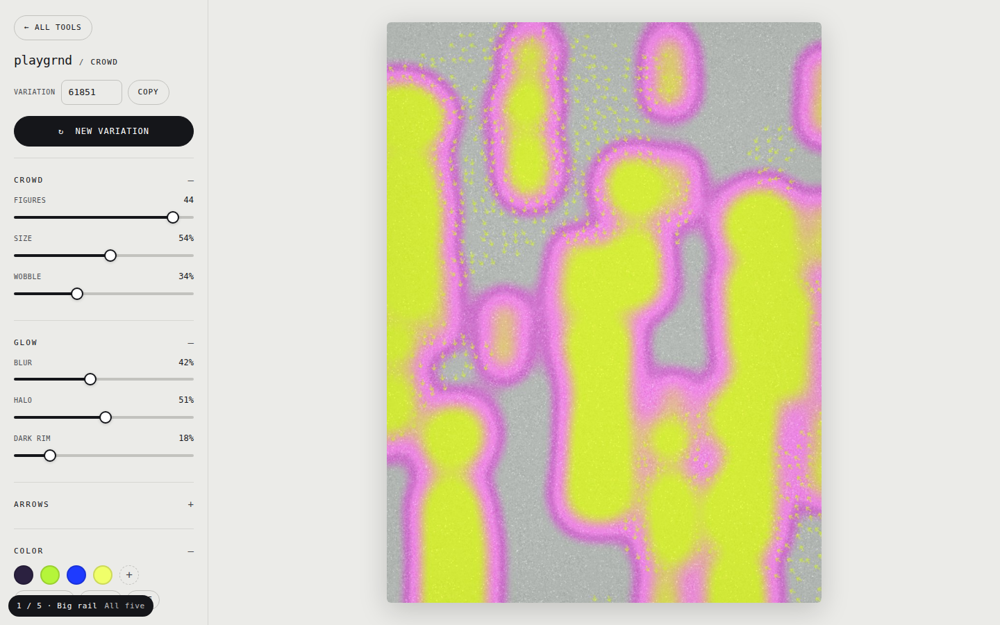
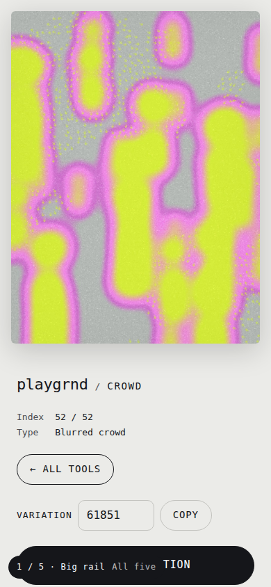
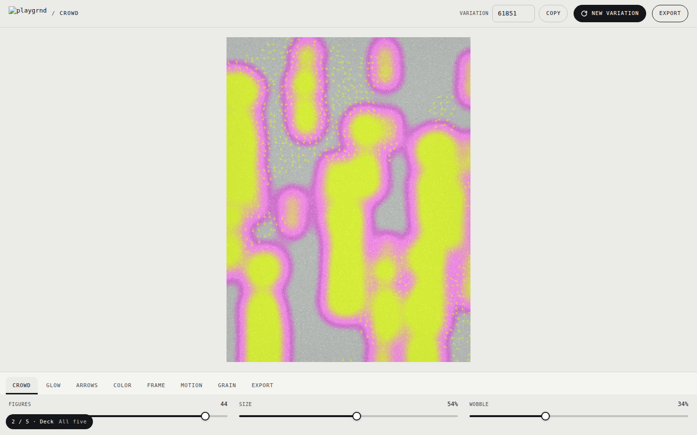
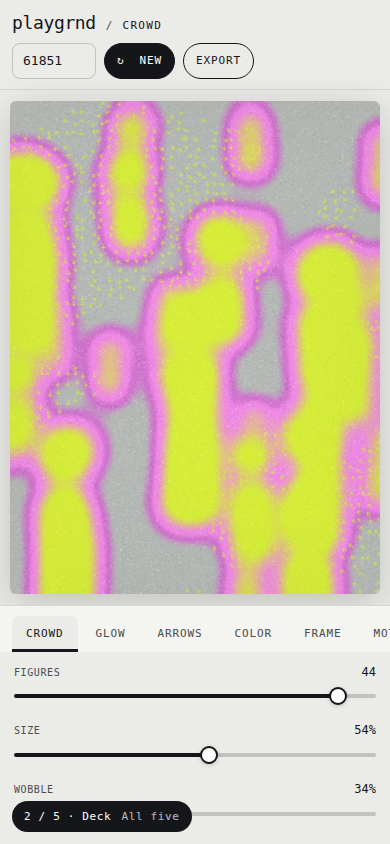
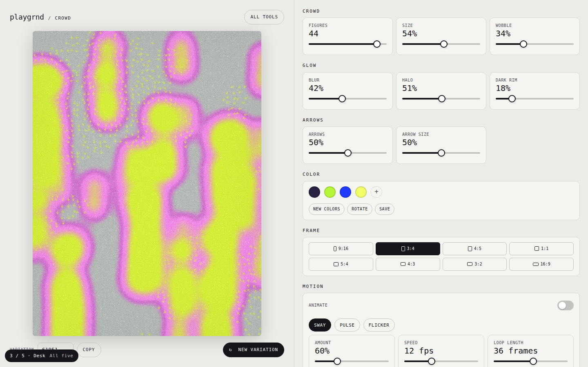
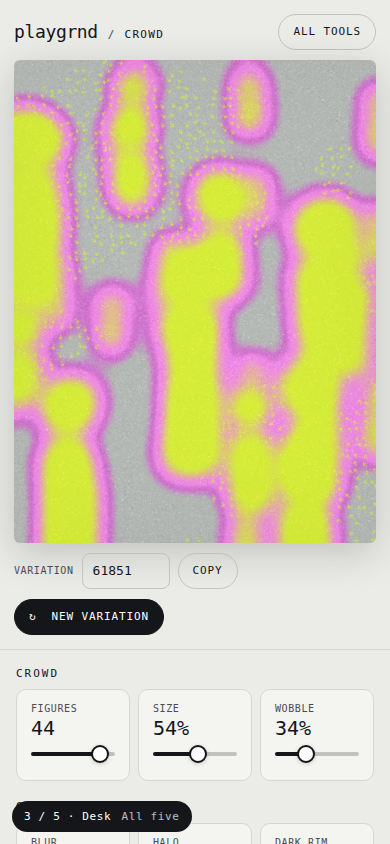
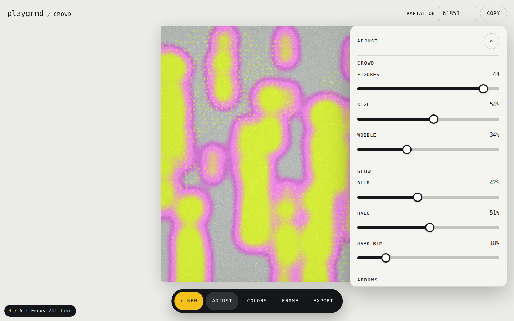
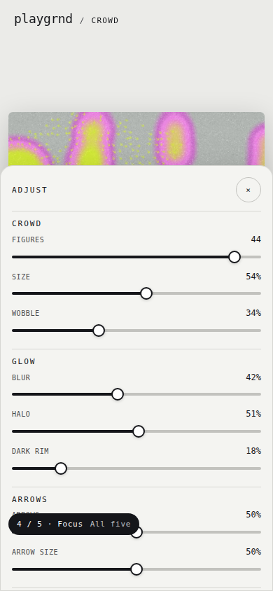
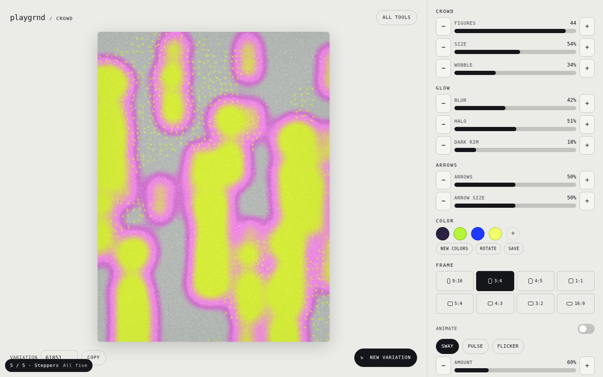
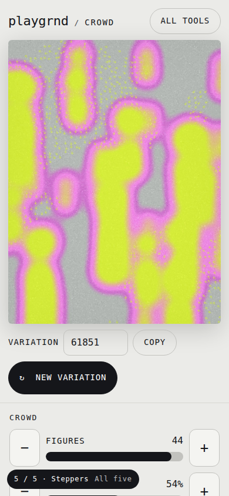

Five ways to make the tool page easier to see and easier to grab, each a moderate step up from today rather than a leap. Same brand, same controls, same picture in every one. Each opens with the real dial set from Crowd so you can feel the sliders, chips and buttons at their new sizes. Try them on your phone too. Then see the five slider designs on option 1 with the Deck's top bar.

Today's layout with everything in one left rail, frame and export included. Everything a step bigger: 11–12px type instead of 8.5, 4px slider tracks instead of 1, 18px thumbs, 36px rows.


Art on top, a tabbed dock along the bottom. One tab open at a time, its dials laid side by side at full width. Built for thumbs.


Art pinned on the left, a grid of dial cards on the right. Each card shows its number a little bigger, so you can find a setting at a glance.


The picture gets the whole screen. A floating bar of five buttons sits at the bottom; each opens a sheet with large controls, then gets out of the way.


No hairline sliders at all. Every dial is a bar with minus and plus buttons, so a nudge is one tap and a jump is a tap on the bar.
